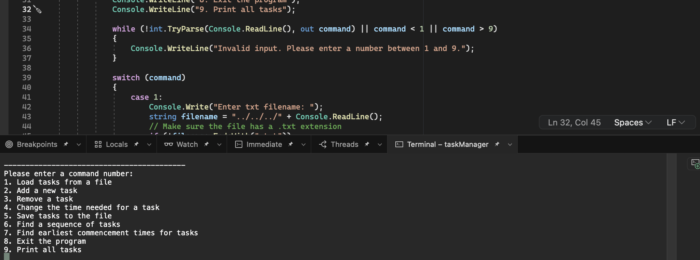

Project Managment System
Introduction
I have crafted an innovative and powerful task management system, built from the ground up to assist both individuals and teams in streamlining their work processes and enhancing their productivity. This system serves as a robust platform where users can organise, track, and manage their tasks with ease. The system is designed to accommodate the input of tasks, the establishment of dependencies between them, and the assignment of time estimates for each task. This structure offers a highly organised, visual representation of tasks, allowing users to manage their workload effectively. Developed using the versatile C# programming language, the system offers superior performance and reliability.
Use of Algorithms and Discrete Structures
The backbone of the task management system is a directed acyclic graph (DAG). Here, tasks are modeled as nodes and task dependencies as directed edges. To calculate a valid task sequence respecting dependencies, I employ topological sorting. Additionally, the earliest commencement time (ECT) for each task, which depends on the completion of preceding tasks, is determined through this model. The combination of graph theory and advanced algorithms delivers a visually intuitive and high-performing system.
Task Creation and Estimation
Users can create tasks by providing the necessary information: task name, time estimate, and dependencies (if any). The time estimate represents the approximate time it will take to complete the task.
Task Dependencies
The system allows users to set dependencies between tasks. If Task A depends on Task B, it means Task A cannot start until Task B is completed. Users can set multiple dependencies for a task.
Task Scheduling
Once tasks and their dependencies have been input, the system calculates a valid sequence for performing the tasks. This sequence ensures that all tasks are performed in an order that respects the set dependencies.
Earliest Commencement Time
The system calculates the earliest commencement time (ECT) for each task based on its dependencies. The ECT of a task is the earliest time at which the task can begin, considering the completion time of its dependencies.
Task Report
The system generates a report containing all tasks in their suggested order of execution, along with their ECTs. The report is downloadable in CSV format, which can be opened in any spreadsheet software for further analysis or printing.
CSV File Support
The task management system allows for importing tasks from a CSV file and exporting tasks to a CSV file. This provides an efficient way for users to bulk input tasks and dependencies, and to save and share their task schedules.